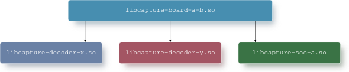

The video capture framework uses common and board-specific header files and libraries.
Header files
To use video capture your application needs to include
the following header files:
- the common header file vcapture/capture.h
- the vcapture/capture-*-ext.h header file(s) for:
- the SOC (system-on-a-chip) on your board (e.g.,
vcapture/capture-j5-ext.h for a Jacinto 5 board)
- the decoder on your board (e.g., vcapture/capture-adv-ext.h for an
ADV* decoder
Libraries
Video capture is shipped with an empty
implementation of the video capture library libcapture.so. To link with this
library use the -lcapture command.
Figure 1. Overview of video capture libraries

At startup, you need to create an appropriate symbolic link (often a proc link) that points to the actual
implementation of this library for your board. For example:
ln –sP /usr/lib/libcapture-board-j5-evm.so /usr/lib/libcapture.so
The board DLL will pull in the board-specific decoder(s), the SOC, and all required shared libraries.
Video capture uses board-specific versions of the following libraries:
- libcapture-board-*-*.so
- Mandatory library with knowledge of the board's SOC and decoder chip, and the number of capture
devices and sources available on the board. This library redirects the video capture functions
to libcapture-soc-*.so and
libcapture-decoder-*.so.
- libcapture-decoder-*.so
- Optional library that initializes and applies properties to decoders (e.g.
libcapture-decoder-tvp5158.so for the TI TVP5158 decoder). This library
implements only the context and property related capture_*_context() and
capture_*_property_*() functions. The source code for the functions in
this library is in decoder.c.
- On some boards, the video capture framework doesn't include a
libcapture-decoder-*.so library, leaving control of the decoder to the
decoder utility. In this case, a special board DLL (e.g.
libcapture-board-*-no-decoder.so), which only pulls in a
libcapture-soc-*.so library is used.
- libcapture-soc-*.so
- Mandatory library for the board's SOC.
Every board-specific library has the definition of the entire API set, as defined in
capture.h.
See Video Capture API Library Reference for more information.